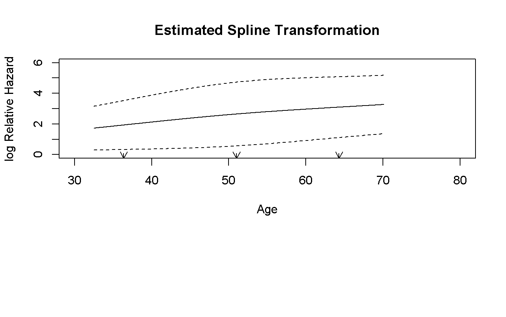
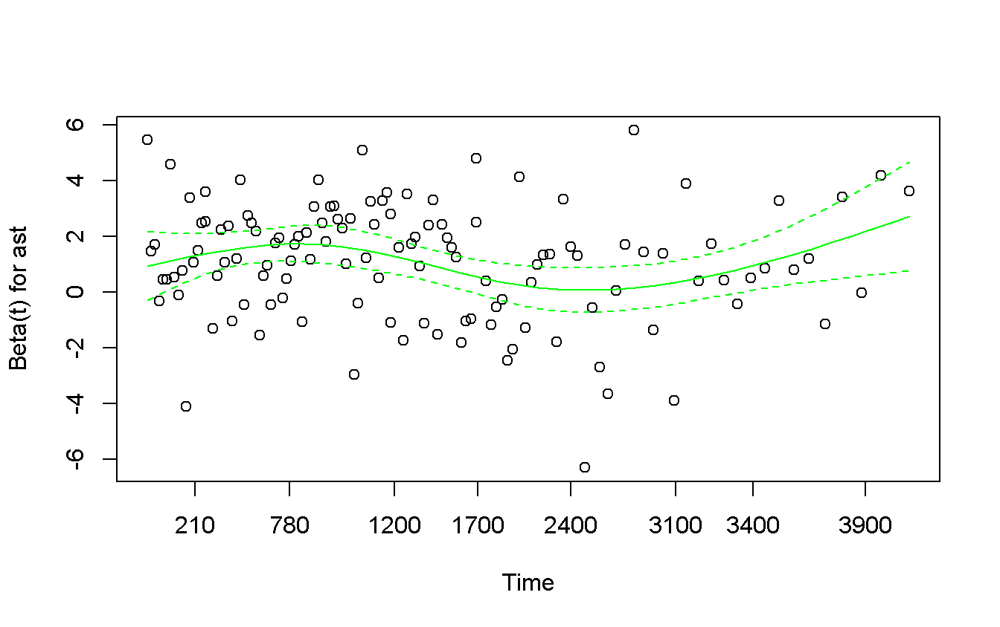
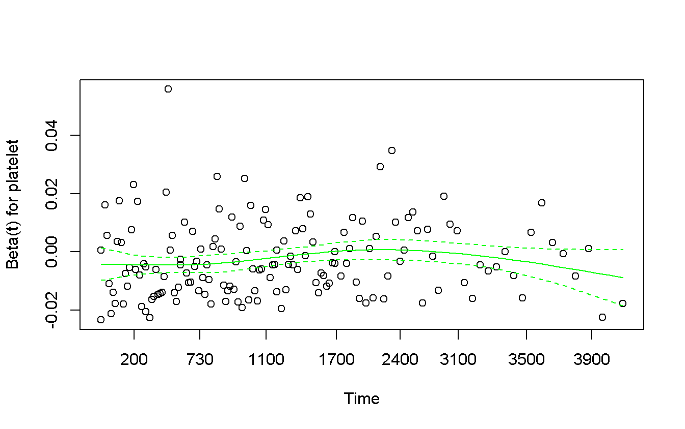
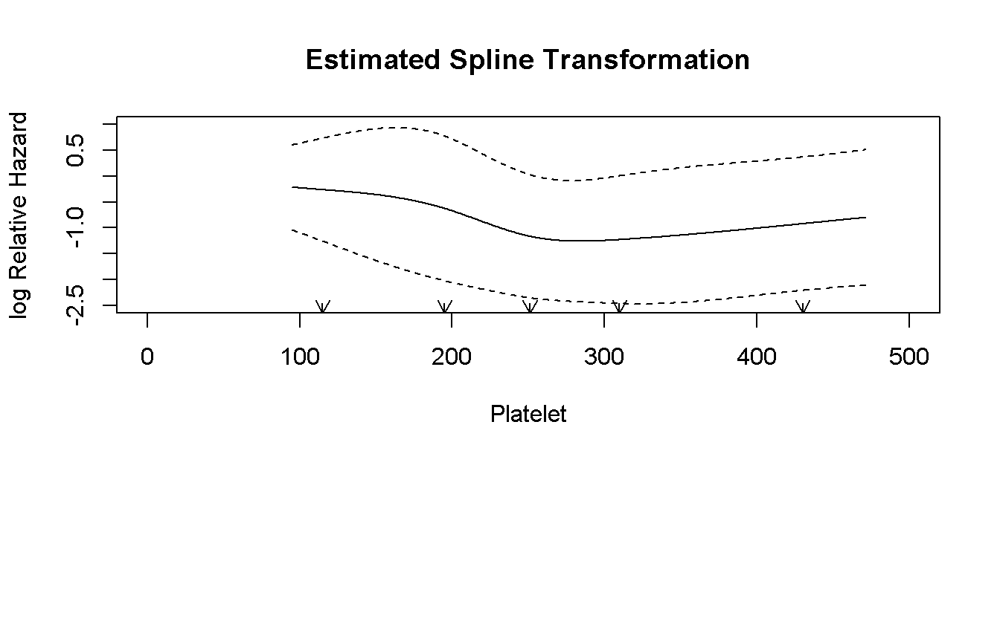
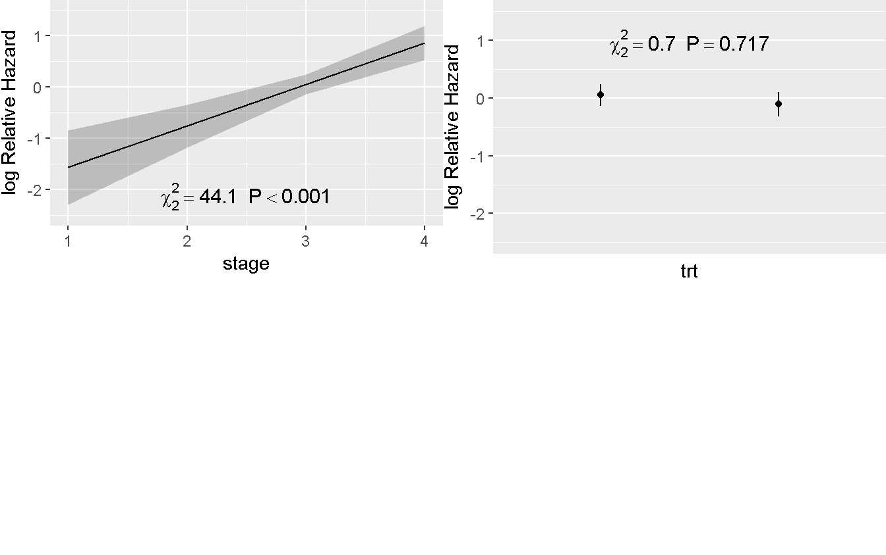
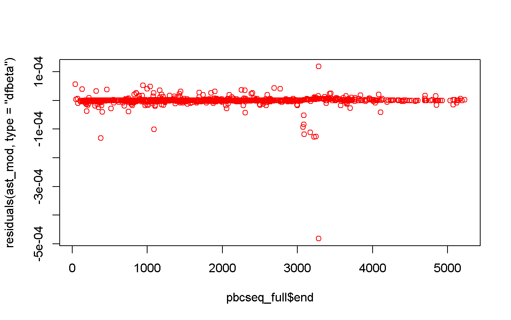

Chapter 2 Tuesday: Cox models
2.1 Key (operative) concepts
- Non-informative censoring assumption!
We cannot test for it, but we can be convinced of it
- Test any covariates for proportional hazard. If fail:
- If \(H_0\) is valid, it is not a problem
- Is it due to outliers?
- Does this variable really need?
- … do you really think that proportional of hazard should hold? What about shift to a different model?
- Test continuous variable for log-linearity. If fail:
- try a transformation of the variable (i.e., log, spline, …)
- if it is not possible (e.g. U-shape) perform a categorization
When performing categorization do not base it on the p-value: you have to explain why this choiche is clinically relevant and not statistically significant!
- The biggest problem with databases with more observations for each patients is not the model but to produce a table with the right information in the right position. In particular we need the following columns
- id
- start
- end
- event
- covariates…
- Get results easy to explain to / understand by a clinician!
2.2 Basic tests and funtions
For this part we will use the data pbc (?pbc) from the package survival.
Note:
data(pbc)load thepbcdata-set and thepbcseqone, so on one side we do not need to calldata(pbcseq)to load the letter, on the other sidedata(pbcseq)will throw an error because to load it we have to calldata(pbc). (We will use both data-sets.)
set.seed(171003)
data(pbc) # load the data-set
# ?pbc
pbc_df <- as_tibble(pbc) # create the tibble version of it
dd <- datadist(pbc_df) # store in the dd variable its `datadist()` for _rms_
pbc_df # give a look at it## # A tibble: 418 x 20
## id time status trt age sex ascites hepato spiders edema
## <int> <int> <int> <int> <dbl> <fctr> <int> <int> <int> <dbl>
## 1 1 400 2 1 58.76523 f 1 1 1 1.0
## 2 2 4500 0 1 56.44627 f 0 1 1 0.0
## 3 3 1012 2 1 70.07255 m 0 0 0 0.5
## 4 4 1925 2 1 54.74059 f 0 1 1 0.5
## 5 5 1504 1 2 38.10541 f 0 1 1 0.0
## 6 6 2503 2 2 66.25873 f 0 1 0 0.0
## 7 7 1832 0 2 55.53457 f 0 1 0 0.0
## 8 8 2466 2 2 53.05681 f 0 0 0 0.0
## 9 9 2400 2 1 42.50787 f 0 0 1 0.0
## 10 10 51 2 2 70.55989 f 1 0 1 1.0
## # ... with 408 more rows, and 10 more variables: bili <dbl>, chol <int>,
## # albumin <dbl>, copper <int>, alk.phos <dbl>, ast <dbl>, trig <int>,
## # platelet <int>, protime <dbl>, stage <int>describe(pbc_df) # and whatch at some statistics## pbc_df
##
## 20 Variables 418 Observations
## ---------------------------------------------------------------------------
## id
## n missing distinct Info Mean Gmd .05 .10
## 418 0 418 1 209.5 139.7 21.85 42.70
## .25 .50 .75 .90 .95
## 105.25 209.50 313.75 376.30 397.15
##
## lowest : 1 2 3 4 5, highest: 414 415 416 417 418
## ---------------------------------------------------------------------------
## time
## n missing distinct Info Mean Gmd .05 .10
## 418 0 399 1 1918 1253 245.1 606.8
## .25 .50 .75 .90 .95
## 1092.8 1730.0 2613.5 3524.2 4040.6
##
## lowest : 41 43 51 71 77, highest: 4500 4509 4523 4556 4795
## ---------------------------------------------------------------------------
## status
## n missing distinct Info Mean Gmd
## 418 0 3 0.772 0.8301 0.9699
##
## Value 0 1 2
## Frequency 232 25 161
## Proportion 0.555 0.060 0.385
## ---------------------------------------------------------------------------
## trt
## n missing distinct Info Mean Gmd
## 312 106 2 0.75 1.494 0.5015
##
## Value 1 2
## Frequency 158 154
## Proportion 0.506 0.494
## ---------------------------------------------------------------------------
## age
## n missing distinct Info Mean Gmd .05 .10
## 418 0 344 1 50.74 11.96 33.84 36.37
## .25 .50 .75 .90 .95
## 42.83 51.00 58.24 64.30 67.92
##
## lowest : 26.27789 28.88433 29.55510 30.27515 30.57358
## highest: 74.52430 75.00068 75.01164 76.70910 78.43943
## ---------------------------------------------------------------------------
## sex
## n missing distinct
## 418 0 2
##
## Value m f
## Frequency 44 374
## Proportion 0.105 0.895
## ---------------------------------------------------------------------------
## ascites
## n missing distinct Info Sum Mean Gmd
## 312 106 2 0.213 24 0.07692 0.1425
##
## ---------------------------------------------------------------------------
## hepato
## n missing distinct Info Sum Mean Gmd
## 312 106 2 0.75 160 0.5128 0.5013
##
## ---------------------------------------------------------------------------
## spiders
## n missing distinct Info Sum Mean Gmd
## 312 106 2 0.616 90 0.2885 0.4118
##
## ---------------------------------------------------------------------------
## edema
## n missing distinct Info Mean Gmd
## 418 0 3 0.391 0.1005 0.1756
##
## Value 0.0 0.5 1.0
## Frequency 354 44 20
## Proportion 0.847 0.105 0.048
## ---------------------------------------------------------------------------
## bili
## n missing distinct Info Mean Gmd .05 .10
## 418 0 98 0.998 3.221 3.742 0.50 0.60
## .25 .50 .75 .90 .95
## 0.80 1.40 3.40 8.03 14.00
##
## lowest : 0.3 0.4 0.5 0.6 0.7, highest: 21.6 22.5 24.5 25.5 28.0
## ---------------------------------------------------------------------------
## chol
## n missing distinct Info Mean Gmd .05 .10
## 284 134 201 1 369.5 194.5 188.4 213.6
## .25 .50 .75 .90 .95
## 249.5 309.5 400.0 560.8 674.0
##
## lowest : 120 127 132 149 151, highest: 1336 1480 1600 1712 1775
## ---------------------------------------------------------------------------
## albumin
## n missing distinct Info Mean Gmd .05 .10
## 418 0 154 1 3.497 0.473 2.750 2.967
## .25 .50 .75 .90 .95
## 3.243 3.530 3.770 4.010 4.141
##
## lowest : 1.96 2.10 2.23 2.27 2.31, highest: 4.30 4.38 4.40 4.52 4.64
## ---------------------------------------------------------------------------
## copper
## n missing distinct Info Mean Gmd .05 .10
## 310 108 158 1 97.65 83.16 17.45 24.00
## .25 .50 .75 .90 .95
## 41.25 73.00 123.00 208.10 249.20
##
## lowest : 4 9 10 11 12, highest: 412 444 464 558 588
## ---------------------------------------------------------------------------
## alk.phos
## n missing distinct Info Mean Gmd .05 .10
## 312 106 295 1 1983 1760 599.6 663.0
## .25 .50 .75 .90 .95
## 871.5 1259.0 1980.0 3826.4 6669.9
##
## lowest : 289.0 310.0 369.0 377.0 414.0
## highest: 11046.6 11320.2 11552.0 12258.8 13862.4
## ---------------------------------------------------------------------------
## ast
## n missing distinct Info Mean Gmd .05 .10
## 312 106 179 1 122.6 60.45 54.25 60.45
## .25 .50 .75 .90 .95
## 80.60 114.70 151.90 196.47 219.25
##
## lowest : 26.35 28.38 41.85 43.40 45.00, highest: 288.00 299.15 328.60 338.00 457.25
## ---------------------------------------------------------------------------
## trig
## n missing distinct Info Mean Gmd .05 .10
## 282 136 146 1 124.7 64.07 56.00 63.10
## .25 .50 .75 .90 .95
## 84.25 108.00 151.00 195.00 230.95
##
## lowest : 33 44 46 49 50, highest: 319 322 382 432 598
## ---------------------------------------------------------------------------
## platelet
## n missing distinct Info Mean Gmd .05 .10
## 407 11 243 1 257 109.7 114.9 138.2
## .25 .50 .75 .90 .95
## 188.5 251.0 318.0 386.2 430.0
##
## lowest : 62 70 71 76 79, highest: 517 518 539 563 721
## ---------------------------------------------------------------------------
## protime
## n missing distinct Info Mean Gmd .05 .10
## 416 2 48 0.998 10.73 1.029 9.60 9.80
## .25 .50 .75 .90 .95
## 10.00 10.60 11.10 12.00 12.45
##
## lowest : 9.0 9.1 9.2 9.3 9.4, highest: 13.8 14.1 15.2 17.1 18.0
## ---------------------------------------------------------------------------
## stage
## n missing distinct Info Mean Gmd
## 412 6 4 0.893 3.024 0.9519
##
## Value 1 2 3 4
## Frequency 21 92 155 144
## Proportion 0.051 0.223 0.376 0.350
## ---------------------------------------------------------------------------2.2.1 Impact of sex on death {sex2}
First of all we have to ask to our self, and to the clinicians, some questions:
There are non-informative censoring? Yes, because there is a final data-independent date (i.e. July, 1986). This is completely non-informative with regards to the patients. So we can suspect a non-informative censoring and start investigations using Cox model.
What we have to do with the transplant? I.e.,
eventhas three levels: censored, transplant, dead; how we have to consider transplanted patients? In this case, clinicians answered that the transplant status is completely random! So, we can believe that it is a non-informative censoring.2
Moreover we have to consider, before to start, that sex is a categorical variable, so we have to check (only) the proportionality of the hazards.
# Using _survival_ (Cox model for proportional hazard against sex)
cox_sex <- coxph(Surv(time, status == 2) ~ sex,
data = pbc_df
)
cox.zph(cox_sex) # test for proportionality of hazards## rho chisq p
## sexf -0.0563 0.502 0.479cox.zph(cox_sex) %>%
plot(
main = 'Graph of the scaled Schoenfeld residuals for sex, along with a smooth curve',
col = 'blue'
)
The proportional hazard assumption is not invalidate so we can continue with the analyses.
summary(cox_sex)## Call:
## coxph(formula = Surv(time, status == 2) ~ sex, data = pbc_df)
##
## n= 418, number of events= 161
##
## coef exp(coef) se(coef) z Pr(>|z|)
## sexf -0.3809 0.6833 0.2221 -1.714 0.0864 .
## ---
## Signif. codes: 0 '***' 0.001 '**' 0.01 '*' 0.05 '.' 0.1 ' ' 1
##
## exp(coef) exp(-coef) lower .95 upper .95
## sexf 0.6833 1.464 0.4421 1.056
##
## Concordance= 0.518 (se = 0.013 )
## Rsquare= 0.006 (max possible= 0.985 )
## Likelihood ratio test= 2.69 on 1 df, p=0.101
## Wald test = 2.94 on 1 df, p=0.08645
## Score (logrank) test = 2.97 on 1 df, p=0.08459The effect of sex, viewed as hazard ration, say that if you are a female it seems that you have a lower risk to die, but it is not significant (i.e., \(p\)-value \(> 0.05\) and CI include \(1\)).
Anyone have the same risk, 1, to die… What the hazard ration say is that if at the begin of a day you are alive, if you a re a woman you have 32% less probability to die before the end of the day respect a men.
# Using rms
rms_sex <- cph(Surv(time, status == 2) ~ sex,
data = pbc_df,
x = TRUE, # to compute cox.zph, we need to store x and y
y = TRUE
)
cox.zph(rms_sex)## rho chisq p
## sex=f -0.0563 0.501 0.479cox.zph(rms_sex) %>%
plot(col = 'green') # exactly the same results as before!
summary(rms_sex) # a cleaner and more informative output, note Low and High## Effects Response : Surv(time, status == 2)
##
## Factor Low High Diff. Effect S.E. Lower 0.95 Upper 0.95
## sex - m:f 2 1 NA 0.38206 0.22205 -0.053149 0.81727
## Hazard Ratio 2 1 NA 1.46530 NA 0.948240 2.264302.2.2 Impact of age on death
- we have to check for the proportional HR
- It is continuous variable, we have to check the the log-linearity too
# Using survival
cox_age <- coxph(Surv(time, status == 2) ~ age,
data = pbc_df
)
cox.zph(cox_age)## rho chisq p
## age -0.0304 0.139 0.71cox.zph(cox_age) %>%
plot(col = 'blue')
The proportional hazard hypothesis is not invalidated
The outputs of rcspline.plot are a plot and a very long matrix with the values of xe, lower, upper. The latters are not of our interest, but there are no options to not get them. So we include the command into
invisible(capture.output(.))box.3
invisible(capture.output(rcspline.plot(
x = pbc_df$age,
y = pbc_df$time,
event = pbc_df$status == 2,
nk = 3, # default are 5 knots, too mutch for this model
# model = 'cox', # If event is present, model is assumed to be "cox"
xlab = 'Age',
statloc = 'll'
)))
The log-linearity is not invalidated
Note: sometimes you know the answer for log-linearity (for any reason), in those cases do not test for it!! (It is not very powerful so for small sample sizes it never reject it)
summary(cox_age)## Call:
## coxph(formula = Surv(time, status == 2) ~ age, data = pbc_df)
##
## n= 418, number of events= 161
##
## coef exp(coef) se(coef) z Pr(>|z|)
## age 0.039185 1.039963 0.007847 4.994 5.92e-07 ***
## ---
## Signif. codes: 0 '***' 0.001 '**' 0.01 '*' 0.05 '.' 0.1 ' ' 1
##
## exp(coef) exp(-coef) lower .95 upper .95
## age 1.04 0.9616 1.024 1.056
##
## Concordance= 0.616 (se = 0.025 )
## Rsquare= 0.058 (max possible= 0.985 )
## Likelihood ratio test= 25.19 on 1 df, p=5.205e-07
## Wald test = 24.94 on 1 df, p=5.922e-07
## Score (logrank) test = 25.3 on 1 df, p=4.918e-07The effect is significant but too low to understand, so we can change the “measure of time” to expand it.
coxph(Surv(time, status == 2) ~ I(age / 10), # consider 10 years as one
data = pbc_df
) %>%
summary## Call:
## coxph(formula = Surv(time, status == 2) ~ I(age/10), data = pbc_df)
##
## n= 418, number of events= 161
##
## coef exp(coef) se(coef) z Pr(>|z|)
## I(age/10) 0.39185 1.47972 0.07847 4.994 5.92e-07 ***
## ---
## Signif. codes: 0 '***' 0.001 '**' 0.01 '*' 0.05 '.' 0.1 ' ' 1
##
## exp(coef) exp(-coef) lower .95 upper .95
## I(age/10) 1.48 0.6758 1.269 1.726
##
## Concordance= 0.616 (se = 0.025 )
## Rsquare= 0.058 (max possible= 0.985 )
## Likelihood ratio test= 25.19 on 1 df, p=5.205e-07
## Wald test = 24.94 on 1 df, p=5.922e-07
## Score (logrank) test = 25.3 on 1 df, p=4.918e-07Here, the effect is increased, but we have to pay attention the an increment of “one”, here, corresponds to an increment of ten years!
# Using rms
rms_age <- cph(Surv(time, status == 2) ~ age,
data = pbc_df,
x = TRUE, # to compute cox.zph, we need to store x and y
y = TRUE
)
Predict(rms_age) %>%
plot
summary(rms_age) # _rms_ show effects from the Lower to the Higher limit of IQR## Effects Response : Surv(time, status == 2)
##
## Factor Low High Diff. Effect S.E. Lower 0.95 Upper 0.95
## age 42.832 58.241 15.409 0.60379 0.12091 0.36681 0.84076
## Hazard Ratio 42.832 58.241 15.409 1.82900 NA 1.44310 2.31810 # and report the different between them as well as the HR, so
# we do not need to perform triky transformation which asks
# for an alterate interpretation of the resultIn particular, the effect quite doubled in fifteen years.4.
2.2.3 Impact of aspartate aminotransferase (ast) on death
- same of age
rms_ast <- cph(Surv(time, status == 2) ~ ast,
data = pbc_df,
x = TRUE,
y = TRUE
)
cox.zph(rms_ast)## rho chisq p
## ast -0.0641 0.274 0.601cox.zph(rms_ast) %>%
plot(col = 'green')
The proportional hazard assumption is not violated, but by the graph it seams not that linear. Try to transform it using the \(log()\) transformation.
log_ast <- cph(Surv(time, status == 2) ~ log(ast),
data = pbc_df,
x = TRUE,
y = TRUE
)
cox.zph(log_ast)## rho chisq p
## ast -0.1 1.13 0.289cox.zph(log_ast) %>%
plot(col = 'green')
The situation is not much better…but we can say that there exists a line living in the middle of the band…so we are not very happy but we accept it.
Let’s test for log-linearity
invisible(capture.output(rcspline.plot(
x = log(pbc_df$ast),
y = pbc_df$time,
event = pbc_df$status == 2,
xlab = 'ast',
statloc = 'll'
)))
The log-linear assumption is not violated.
Finally, look at the effect of the log of ast
summary(log_ast)## Effects Response : Surv(time, status == 2)
##
## Factor Low High Diff. Effect S.E. Lower 0.95 Upper 0.95
## ast 80.6 151.9 71.3 0.69872 0.12499 0.45374 0.9437
## Hazard Ratio 80.6 151.9 71.3 2.01120 NA 1.57420 2.5695It is significantly protective, with doubling the effect between the borders of the IQR.
2.2.4 Impact of platelet on death
- same of age
rms_platelet <- cph(Surv(time, status == 2) ~ platelet,
data = pbc_df,
x = TRUE,
y = TRUE
)
cox.zph(rms_platelet)## rho chisq p
## platelet 0.0688 1 0.316cox.zph(rms_platelet) %>%
plot(col = 'green')
invisible(capture.output(rcspline.plot(
x = pbc_df$platelet %>% as.numeric,
y = pbc_df$time,
event = pbc_df$status == 2,
xlab = 'Platelet',
statloc = 'll'
)))
The log-linear plot has a U-shape so, standard transformation are not good. We can try to perform a categorization. Two strategy: 1. look at the log-linear plot and try to find a good cut-points, but we have to explain how we have defined them (and “use the p-value” is not a good strategy) 2. Use standard non related cutoff, such as median or quartiles
cox_cut_platelet <- coxph(
Surv(time, status == 2) ~ cut(platelet, c(0, 150, 400, 1000)),
data = pbc_df
)
cox.zph(cox_cut_platelet)## rho chisq p
## cut(platelet, c(0, 150, 400, 1000))(150,400] 0.06413 0.62938 0.428
## cut(platelet, c(0, 150, 400, 1000))(400,1e+03] 0.00345 0.00181 0.966
## GLOBAL NA 0.74607 0.689cox.zph(cox_cut_platelet) %>%
plot(col = 'blue')

summary(cox_cut_platelet)## Call:
## coxph(formula = Surv(time, status == 2) ~ cut(platelet, c(0,
## 150, 400, 1000)), data = pbc_df)
##
## n= 407, number of events= 155
## (11 observations deleted due to missingness)
##
## coef exp(coef) se(coef)
## cut(platelet, c(0, 150, 400, 1000))(150,400] -0.7164 0.4885 0.1948
## cut(platelet, c(0, 150, 400, 1000))(400,1e+03] -0.8445 0.4298 0.3352
## z Pr(>|z|)
## cut(platelet, c(0, 150, 400, 1000))(150,400] -3.678 0.000235 ***
## cut(platelet, c(0, 150, 400, 1000))(400,1e+03] -2.519 0.011755 *
## ---
## Signif. codes: 0 '***' 0.001 '**' 0.01 '*' 0.05 '.' 0.1 ' ' 1
##
## exp(coef) exp(-coef)
## cut(platelet, c(0, 150, 400, 1000))(150,400] 0.4885 2.047
## cut(platelet, c(0, 150, 400, 1000))(400,1e+03] 0.4298 2.327
## lower .95 upper .95
## cut(platelet, c(0, 150, 400, 1000))(150,400] 0.3335 0.7156
## cut(platelet, c(0, 150, 400, 1000))(400,1e+03] 0.2228 0.8290
##
## Concordance= 0.561 (se = 0.018 )
## Rsquare= 0.031 (max possible= 0.984 )
## Likelihood ratio test= 12.68 on 2 df, p=0.001766
## Wald test = 14.53 on 2 df, p=0.0006987
## Score (logrank) test = 15.19 on 2 df, p=0.0005032But here the reference level, i.e. the contrast, is the lower level but the interested is what happen if we lie above or over the standard values, so we have to relevel the category to make the medium level as the reference one, i.e. the first.
pbc_df <- pbc_df %>%
mutate(
platelet_ref = cut(pbc_df$platelet, c(0, 150, 400, 1000)) %>%
relevel(ref = "(150,400]")
)
cox_relev_platelet <- coxph(Surv(time, status == 2) ~ platelet_ref,
data = pbc_df
)
summary(cox_relev_platelet)## Call:
## coxph(formula = Surv(time, status == 2) ~ platelet_ref, data = pbc_df)
##
## n= 407, number of events= 155
## (11 observations deleted due to missingness)
##
## coef exp(coef) se(coef) z Pr(>|z|)
## platelet_ref(0,150] 0.7164 2.0471 0.1948 3.678 0.000235 ***
## platelet_ref(400,1e+03] -0.1281 0.8798 0.3046 -0.420 0.674235
## ---
## Signif. codes: 0 '***' 0.001 '**' 0.01 '*' 0.05 '.' 0.1 ' ' 1
##
## exp(coef) exp(-coef) lower .95 upper .95
## platelet_ref(0,150] 2.0471 0.4885 1.3975 2.999
## platelet_ref(400,1e+03] 0.8798 1.1366 0.4843 1.598
##
## Concordance= 0.561 (se = 0.018 )
## Rsquare= 0.031 (max possible= 0.984 )
## Likelihood ratio test= 12.68 on 2 df, p=0.001766
## Wald test = 14.53 on 2 df, p=0.0006987
## Score (logrank) test = 15.19 on 2 df, p=0.00050322.3 Investigation on adjusted variables and interactions
Clinician: what is the effect of treatment (trt) on death?
cph(Surv(time, status == 2) ~ trt,
data = pbc_df
) %>%
summary## Effects Response : Surv(time, status == 2)
##
## Factor Low High Diff. Effect S.E. Lower 0.95 Upper 0.95
## trt 1 2 1 -0.057189 0.17916 -0.40835 0.29397
## Hazard Ratio 1 2 1 0.944420 NA 0.66475 1.34170No significant effect for treatment.
Clinician: an adjusted with edema?
cph(Surv(time, status == 2) ~ trt + edema,
data = pbc_df
) %>%
summary## Effects Response : Surv(time, status == 2)
##
## Factor Low High Diff. Effect S.E. Lower 0.95 Upper 0.95
## trt 1 2 1 -0.065946 0.17953 -0.41781 0.28592
## Hazard Ratio 1 2 1 0.936180 NA 0.65849 1.33100
## edema 0 1 1 2.280700 0.25761 1.77580 2.78560
## Hazard Ratio 0 1 1 9.783600 NA 5.90510 16.21000No effect for treatment nor edema
Clinicians: and what about their interaction?5
cph(Surv(time, status == 2) ~ trt * edema,
data = pbc_df
) %>%
summary## Effects Response : Surv(time, status == 2)
##
## Factor Low High Diff. Effect S.E. Lower 0.95 Upper 0.95
## trt 1 2 1 -0.24014 0.22959 -0.69012 0.20984
## Hazard Ratio 1 2 1 0.78652 NA 0.50151 1.23350
## edema 0 1 1 2.62340 0.37161 1.89500 3.35170
## Hazard Ratio 0 1 1 13.78200 NA 6.65280 28.55200
##
## Adjusted to: trt=1 edema=0.5No effect.
Clinicians: and what about adjusted with stage?
adj_pbc <- pbc_df %>%
mutate(stage_fct = factor(stage))
dd <- datadist(adj_pbc)
cph(Surv(time, status == 2) ~ trt + stage_fct,
data = adj_pbc
) %>%
summary## Effects Response : Surv(time, status == 2)
##
## Factor Low High Diff. Effect S.E. Lower 0.95 Upper 0.95
## trt 1 2 1 -0.14713 0.17989 -0.49971 0.20545
## Hazard Ratio 1 2 1 0.86318 NA 0.60671 1.22810
## stage_fct - 1:3 3 1 NA -2.17290 1.01080 -4.15410 -0.19176
## Hazard Ratio 3 1 NA 0.11384 NA 0.01570 0.82550
## stage_fct - 2:3 3 2 NA -0.54826 0.29344 -1.12340 0.02687
## Hazard Ratio 3 2 NA 0.57795 NA 0.32517 1.02720
## stage_fct - 4:3 3 4 NA 0.91613 0.19771 0.52862 1.30360
## Hazard Ratio 3 4 NA 2.49960 NA 1.69660 3.68270Treatment still with no significant effect. stage has some effects, i.e. from the 3 to 1 or to 4,
Clinicians: oh, so let’s look at the interactions!
rms_trt_stage <- cph(Surv(time, status == 2) ~ trt * stage,
data = adj_pbc
)
summary(rms_trt_stage)## Effects Response : Surv(time, status == 2)
##
## Factor Low High Diff. Effect S.E. Lower 0.95 Upper 0.95
## trt 1 2 1 -0.15717 0.20284 -0.55473 0.24039
## Hazard Ratio 1 2 1 0.85456 NA 0.57423 1.27170
## stage 2 4 2 1.61630 0.33135 0.96682 2.26570
## Hazard Ratio 2 4 2 5.03420 NA 2.62960 9.63790
##
## Adjusted to: trt=1 stage=3Predict(rms_trt_stage) %>%
ggplot(anova = anova(rms_trt_stage), pval = TRUE)
Predict(rms_trt_stage) %>%
ggplot(anova = anova(rms_trt_stage), pval = TRUE)
Treatment continue to have no effect
2.4 Longitudinal suvival data analayses
Load a data-set, update the datadist() for the rms package, and take a look at the data
pbcseq_df <- as_tibble(pbcseq)
dd <- datadist(pbcseq_df)
pbcseq_df## # A tibble: 1,945 x 19
## id futime status trt age sex day ascites hepato spiders
## <int> <int> <int> <int> <dbl> <fctr> <int> <int> <int> <int>
## 1 1 400 2 1 58.76523 f 0 1 1 1
## 2 1 400 2 1 58.76523 f 192 1 1 1
## 3 2 5169 0 1 56.44627 f 0 0 1 1
## 4 2 5169 0 1 56.44627 f 182 0 1 1
## 5 2 5169 0 1 56.44627 f 365 0 1 1
## 6 2 5169 0 1 56.44627 f 768 0 1 1
## 7 2 5169 0 1 56.44627 f 1790 1 1 1
## 8 2 5169 0 1 56.44627 f 2151 1 1 1
## 9 2 5169 0 1 56.44627 f 2515 1 1 1
## 10 2 5169 0 1 56.44627 f 2882 1 1 1
## # ... with 1,935 more rows, and 9 more variables: edema <dbl>, bili <dbl>,
## # chol <int>, albumin <dbl>, alk.phos <int>, ast <dbl>, platelet <int>,
## # protime <dbl>, stage <int>- The only tricky task is to correctly manage and prepare the data. Our proposal take advantage of the
dplyrfunctionality
pbcseq_full <- pbcseq_df %>%
group_by(id) %>% # perform all the next according to the id
mutate(
start = day, # just to have consistent names
end = lead(day), # the end is "the next start" (last will be NA)
status = if_else(is.na(end), status, 0L),
end = if_else(is.na(end), futime, end) # fill the NA-ends (i.e. the lasts)
# with the real end
)2.4.1 Impact of bilurubine of death
bil_mod <- cph(
Surv(time = start, time2 = end, event = status == 2L) ~ log(bili),
data = pbcseq_full,
x = TRUE,
y = TRUE
)
summary(bil_mod)## Effects Response : Surv(time = start, time2 = end, event = status == 2)
##
## Factor Low High Diff. Effect S.E. Lower 0.95 Upper 0.95
## bili 0.8 3.9 3.1 2.0410 0.13391 1.7786 2.3035
## Hazard Ratio 0.8 3.9 3.1 7.6984 NA 5.9213 10.0090plot(
x = pbcseq_full$end,
y = residuals(bil_mod, type = 'dfbeta'),
col = 'red'
)
2.4.2 Impact of ast
ast_mod <- cph(
Surv(time = start, time2 = end, event = status == 2L) ~ ast,
data = pbcseq_full,
x = TRUE,
y = TRUE
)
summary(ast_mod)## Effects Response : Surv(time = start, time2 = end, event = status == 2)
##
## Factor Low High Diff. Effect S.E. Lower 0.95 Upper 0.95
## ast 72 155 83 0.2875 0.044222 0.20083 0.37417
## Hazard Ratio 72 155 83 1.3331 NA 1.22240 1.45380plot(
x = pbcseq_full$end,
y = residuals(ast_mod, type = 'dfbeta'),
col = 'red'
)
plot(
x = pbcseq_full$end,
y = residuals(ast_mod, type = 'martingale'),
col = 'brown'
)
What happen with the strange observations? We try to find which is that outlier.
# look at the residual caracteristics
residuals(ast_mod, type = 'martingale') %>%
describe## .
## n missing distinct Info Mean Gmd
## 1945 0 1855 1 -2.395e-17 0.1868
## .05 .10 .25 .50 .75 .90
## -0.16941 -0.11177 -0.07449 -0.05021 -0.03303 -0.01672
## .95
## 0.95170
##
## lowest : -2.3632251 -0.9104219 -0.7874086 -0.7390614 -0.7120605
## highest: 0.9960346 0.9963091 0.9968442 0.9970148 0.9970895# take the id of the lowest
strange_id <- residuals(ast_mod, type = 'martingale') %>%
which.min
# take a look to the ast
pbcseq_full$ast %>% describe## .
## n missing distinct Info Mean Gmd .05 .10
## 1945 0 418 1 122.7 74.42 41.9 51.2
## .25 .50 .75 .90 .95
## 72.0 107.0 155.0 209.3 250.7
##
## lowest : 6.2 21.0 21.7 22.0 23.3, highest: 473.0 655.7 685.1 918.0 1205.0# check the id
pbcseq_full$ast[[strange_id]]## [1] 1205Here is another example in which the opinion of a clinician is mandatory, i.e. we cannot decide if ignore outliers, which ones, etc
2.5 Prognostic model
2.5.1 prognostic model with àscites, edema, sex, bili, ast, platelet, stage
# prepare an ad hoc data frame
pbc_updated <- pbc_df %>%
mutate(
bili_log = log(bili),
ast_log = log(ast),
platelet_ref = platelet_ref, # we have already defined it
stage_fct = as.factor(stage)
)
dd <- datadist(pbc_updated)
# take a look at them
pbc_updated %>%
dplyr::select(
ascites, edema, sex, bili_log, ast_log, platelet_ref, stage_fct
) %>%
describe## .
##
## 7 Variables 418 Observations
## ---------------------------------------------------------------------------
## ascites
## n missing distinct Info Sum Mean Gmd
## 312 106 2 0.213 24 0.07692 0.1425
##
## ---------------------------------------------------------------------------
## edema
## n missing distinct Info Mean Gmd
## 418 0 3 0.391 0.1005 0.1756
##
## Value 0.0 0.5 1.0
## Frequency 354 44 20
## Proportion 0.847 0.105 0.048
## ---------------------------------------------------------------------------
## sex
## n missing distinct
## 418 0 2
##
## Value m f
## Frequency 44 374
## Proportion 0.105 0.895
## ---------------------------------------------------------------------------
## bili_log
## n missing distinct Info Mean Gmd .05 .10
## 418 0 98 0.998 0.5715 1.149 -0.6931 -0.5108
## .25 .50 .75 .90 .95
## -0.2231 0.3365 1.2238 2.0832 2.6391
##
## lowest : -1.2039728 -0.9162907 -0.6931472 -0.5108256 -0.3566749
## highest: 3.0726933 3.1135153 3.1986731 3.2386785 3.3322045
## ---------------------------------------------------------------------------
## ast_log
## n missing distinct Info Mean Gmd .05 .10
## 312 106 179 1 4.71 0.5075 3.994 4.102
## .25 .50 .75 .90 .95
## 4.389 4.742 5.023 5.280 5.390
##
## lowest : 3.271468 3.345685 3.734092 3.770459 3.806662
## highest: 5.662960 5.700945 5.794841 5.823046 6.125230
## ---------------------------------------------------------------------------
## platelet_ref
## n missing distinct
## 407 11 3
##
## Value (150,400] (0,150] (400,1e+03]
## Frequency 311 61 35
## Proportion 0.764 0.150 0.086
## ---------------------------------------------------------------------------
## stage_fct
## n missing distinct
## 412 6 4
##
## Value 1 2 3 4
## Frequency 21 92 155 144
## Proportion 0.051 0.223 0.376 0.350
## ---------------------------------------------------------------------------There are 11 basic df (one each continuous variable and one-minus-n-level for the categorical one), so to use all of them we need at least \(110\) obs. Data has \(418\), this allow us to use a more complex model, with some interaction, splines, etc (more or less other \(15 -- 30\) df).
We decide (following suggestions from Harrell Jr (2015)) to consider splines for any continuous variable (with 3 knots) and consider sex interaction with them and the other numerical variables, leading to near \(20\) df.
data_used <- pbc_updated %>%
dplyr::select(status, time,
sex, ascites, edema, bili_log, ast_log, platelet_ref, stage_fct
)
dd <- datadist(data_used)
# all the data-set
cph(
Surv(time, status == 2) ~
sex * (ascites + edema + rcs(bili_log, 3) + rcs(ast_log, 3)) +
platelet_ref + stage_fct,
data = data_used
) %>%
summary## Effects Response : Surv(time, status == 2)
##
## Factor Low High Diff. Effect
## ascites 0.00000 1.0000 1.00000 1.1613000
## Hazard Ratio 0.00000 1.0000 1.00000 3.1941000
## edema 0.00000 1.0000 1.00000 0.6370800
## Hazard Ratio 0.00000 1.0000 1.00000 1.8910000
## bili_log -0.22314 1.2238 1.44690 1.2273000
## Hazard Ratio -0.22314 1.2238 1.44690 3.4120000
## ast_log 4.38950 5.0232 0.63372 0.3791100
## Hazard Ratio 4.38950 5.0232 0.63372 1.4610000
## sex - m:f 2.00000 1.0000 NA 2.0211000
## Hazard Ratio 2.00000 1.0000 NA 7.5463000
## platelet_ref - (0,150]:(150,400] 1.00000 2.0000 NA 0.0907330
## Hazard Ratio 1.00000 2.0000 NA 1.0950000
## platelet_ref - (400,1e+03]:(150,400] 1.00000 3.0000 NA 0.0059127
## Hazard Ratio 1.00000 3.0000 NA 1.0059000
## stage_fct - 1:3 3.00000 1.0000 NA -1.2551000
## Hazard Ratio 3.00000 1.0000 NA 0.2850400
## stage_fct - 2:3 3.00000 2.0000 NA -0.3858200
## Hazard Ratio 3.00000 2.0000 NA 0.6798900
## stage_fct - 4:3 3.00000 4.0000 NA 0.6523900
## Hazard Ratio 3.00000 4.0000 NA 1.9201000
## S.E. Lower 0.95 Upper 0.95
## 0.31762 0.538770 1.78380
## NA 1.713900 5.95260
## 0.35904 -0.066626 1.34080
## NA 0.935550 3.82200
## 0.28103 0.676490 1.77810
## NA 1.967000 5.91870
## 0.18497 0.016587 0.74164
## NA 1.016700 2.09940
## 0.54588 0.951150 3.09100
## NA 2.588700 21.99800
## 0.25377 -0.406650 0.58812
## NA 0.665870 1.80060
## 0.35526 -0.690380 0.70221
## NA 0.501380 2.01820
## 1.03160 -3.277100 0.76682
## NA 0.037739 2.15290
## 0.30581 -0.985210 0.21356
## NA 0.373360 1.23810
## 0.23174 0.198190 1.10660
## NA 1.219200 3.02400
##
## Adjusted to: sex=f ascites=0 edema=0.5 bili_log=0.3364722 ast_log=4.74232# without missing data, and with beckward stepwise variable selection
cph(
Surv(time, status == 2) ~
sex + ascites + edema + bili_log + ast_log + platelet_ref + stage_fct,
data = pbc_updated %>%
filter(complete.cases(.))
) %>%
step(trace = 0) %>%
summary## Effects Response : Surv(time, status == 2)
##
## Factor Low High Diff. Effect S.E. Lower 0.95
## ascites 0.00000 1.0000 1.0000 0.62140 0.33765 -0.040376
## Hazard Ratio 0.00000 1.0000 1.0000 1.86150 NA 0.960430
## edema 0.00000 1.0000 1.0000 1.18730 0.33082 0.538900
## Hazard Ratio 0.00000 1.0000 1.0000 3.27820 NA 1.714100
## bili_log -0.22314 1.2238 1.4469 1.24480 0.15866 0.933880
## Hazard Ratio -0.22314 1.2238 1.4469 3.47240 NA 2.544400
## sex - m:f 2.00000 1.0000 NA 0.52890 0.25407 0.030938
## Hazard Ratio 2.00000 1.0000 NA 1.69710 NA 1.031400
## stage_fct - 1:3 3.00000 1.0000 NA -1.48070 1.01500 -3.470100
## Hazard Ratio 3.00000 1.0000 NA 0.22748 NA 0.031115
## stage_fct - 2:3 3.00000 2.0000 NA -0.29414 0.31748 -0.916400
## Hazard Ratio 3.00000 2.0000 NA 0.74517 NA 0.399960
## stage_fct - 4:3 3.00000 4.0000 NA 0.53395 0.22987 0.083422
## Hazard Ratio 3.00000 4.0000 NA 1.70570 NA 1.087000
## Upper 0.95
## 1.28320
## 3.60810
## 1.83570
## 6.26950
## 1.55580
## 4.73890
## 1.02690
## 2.79230
## 0.50872
## 1.66320
## 0.32812
## 1.38840
## 0.98449
## 2.67640References
Harrell Jr, Frank E. 2015. Regression Modeling Strategies: With Applications to Linear Models, Logistic and Ordinal Regression, and Survival Analysis. Springer.
In reality this is not really true because who stay better is on the top of the list!↩
As suggested by couthcommander in https://github.com/CorradoLanera/SuDACDa/issues/2.↩
Good example in which only the clinicians know if it is an effect clinically relevant (deciding it before the analyses) or not↩
The answer here should be “if there are no marginal significant effect is has no sense to look at the interaction terms!”.↩